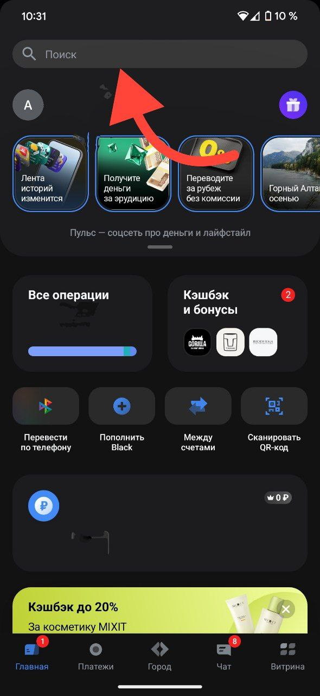
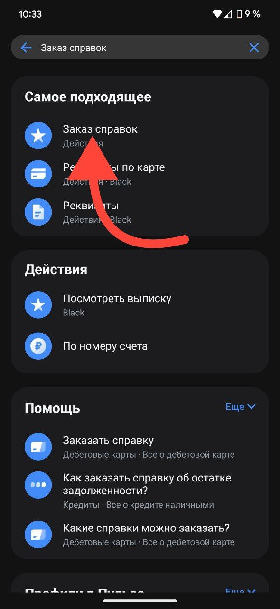
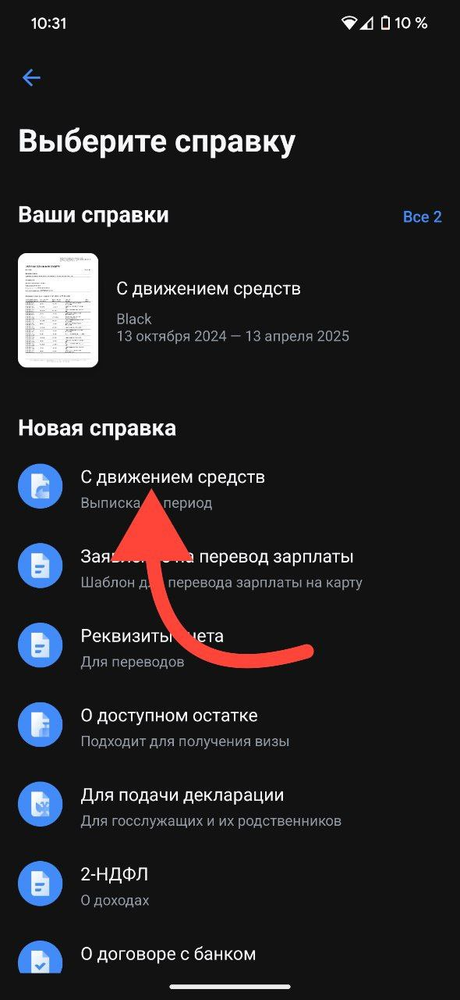
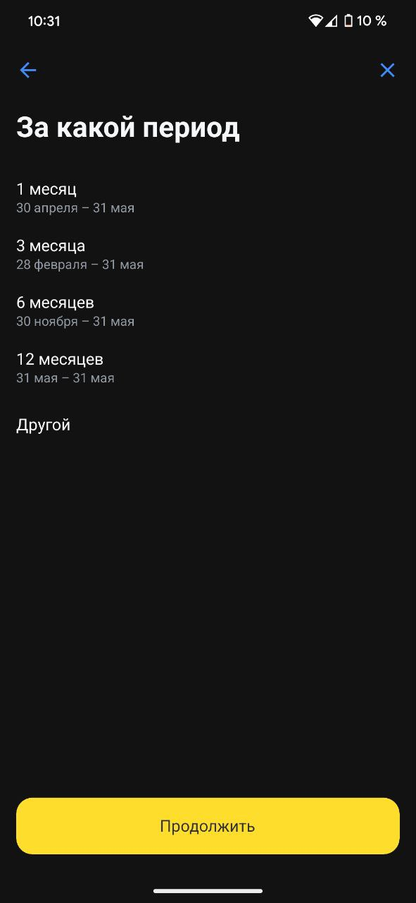
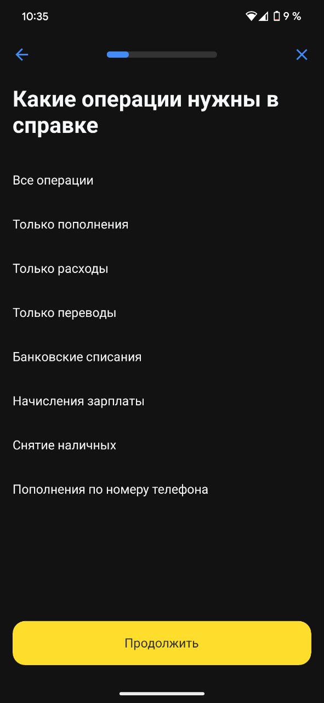

Сбер
1. Перейти в приложение т-банк. После загрузки главного экрана нажать на поиск по направлению стрелки

2. Набрать на экране клавиатуры текст "заказ справок" и выбрать из выпадающего меню подпункт по направлению стрелки

3. В открывшемся меню выбрать "С движением средств"

4. Выбрать период, нажать кнопку далее

4. Выбрать тип операций, по которым вы хотите увидеть выписку. Нажать кнопку продолжить, сохранить и загрузить на сайт
